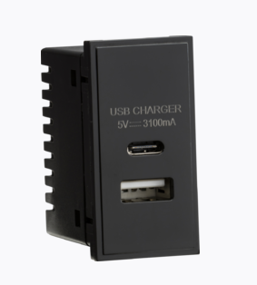
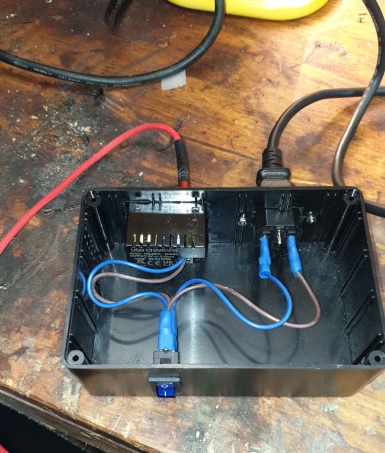
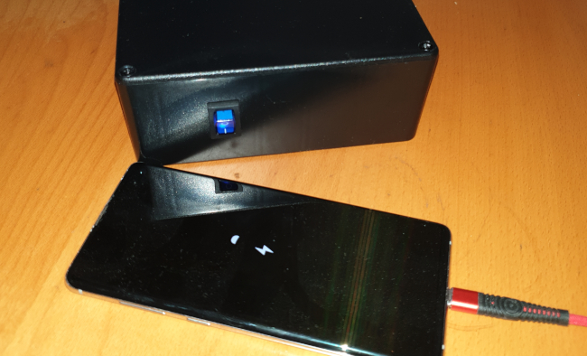
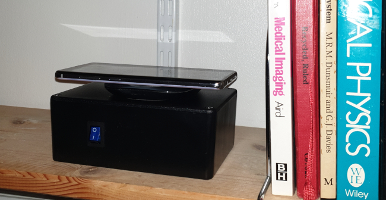

A USB power supply with a real on-off switch

In an earlier article I wrote of my concerns about electrical appliances that cannot be switched completely off. Often these appliances use external power supplies (typically of the ‘wall-wart’ variety) that make it hard to provide a real mains switch. Partly I’m worried about the energy these devices waste, but I’m also concerned about electrical safety. I just don’t like electrical devices being connected to the mains supply for years on end, and I’ve seen such devices fail catastrophically.
In my home, the devices that waste the most energy when they’re apparently switched off are often the same ones that use the most energy when they’re running – my desktop PC, XBox console, A-V amplifier, etc. But, while I only have a few devices like this, I have dozens of USB-powered devices. These invariably have a wall-wart supply that can’t be switched off without pulling the plug from the socket and, while they don’t waste much energy individually, I do have an awful lot of them.
A particular case in point is my Astell & Kern media player, which I mostly use connected to my hi-fi system. It’s USB-powered, and the electrical outlet I plug the wall-wart into is behind a stack of hi-fi equipment. I can power down the player itself, but I can’t easily disconnect the wall-wart from the electrical mains.
How much energy do I waste in the long term, leaving the media player permanently connected to its USB charger? I don’t know. What are the electrical safety implications? I don’t know that, either. Similarly, I don’t fully understand the electrical safety implications of leaving a wireless charging pad powered all the time. There have been reports of these devices overheating and starting fires, when metallic objects have fallen onto the pad. I believe that modern wireless charging pads are resistant to this kind of accident, but do you want to take the chance? Again, my wireless charging pad is powered by a USB wall-wart behind a stack of equipment, and isn’t easy to disconnect when I’m not using it.
I can’t believe I’m the only person on Earth who worries about being unable to switch off USB chargers. But I’ve sought in vain a USB charger from a reputable manufacturer that has a real mains on-off switch. It can’t be that difficult, or expensive, to make one. Can it?
To find out, I decided to make one of my own, and try it out.
Note
This article is about designing and constructing a mains-powered electrical appliance. This isn’t something you should attempt unless you have the skills or training for this kind of work. While I’m satisfied that my design and construction is safe for its intended use, I don’t know whether it conforms to regulatory standards.
Design
There’s nothing remotely complicated about the design of my switched USB charger. It’s just a box containing a proprietary mains-powered USB charger module, a switch, and a connector from the mains supply.
The USB charger module is of the type that is designed to be fitted in a wall-mounting box, as part of a permanent electrical installation. These devices typically connect to a conventional mains wiring ring, along with socket outlets. They’re easy to use for my application as well, as they require nothing more than live and neutral supply connections. I’ve seen them for sale for as little as UK£2, but I preferred to use one from a supplier I recognise. In the end I settled on this Knightsbridge part.

It’s not clear from the photo, but the USB charger module has two shrouded screw terminals on the back, for connecting the live and neutral of the mains supply. It can deliver 15.5W, shared between its USB A and USB C ports. That’s not a huge amount by modern standards; but bear in mind that these devices are designed to be used in an installation with no ventilation. It has to run cool, even at maximum power.
I used a conventional IEC ‘kettle’ connection for the mains supply for my unit, but I would use a less heavy-duty connector if I were building more than one of them. The supply current will never be more than a fraction of an amp, after all. I used the IEC connector because I already have a box-full of compatible cables.
Note
In the UK, you can’t rely on a kettle connector having anything other than a 13-amp fuse fitted. The internal wiring of the charger has to accommodate this. While you can – in principle – fit a smaller plug fuse, you can’t easily prevent somebody swapping the cable for one from an actual kettle, which probably has a 13A fuse. More on this point later.
And, of course, there’s the all-important on-off switch. For convenience, I used this rocker with built-in neon indicator, which costs less than a quid. Of course, there are many similar switches available from electronics suppliers. The presence of the neon indicator means that the switch has a neutral terminal, as well as the two terminals for the switch contacts.
Note It’s important to use a switch that is rated for mains voltages. The current capacity is unimportant in this application, but switches designed for automotive and low-voltage applications can arc when switching higher voltages, reducing the service life.
If I were to be making many of these devices, I’d get a custom enclosure made, probably by laser cutting. Unfortunately, the cost of single-unit laser cutting is prohibitive, so I used a cheap, generic ABS plastic box for this prototype. It’s only cheaper to use a ready-made box if you don’t cost your own time, of course, because manually cutting the rectangular openings for the components is a pain in the backside. The hole for the USB charger module, in particular, needs to be cut very accurately, because it doesn’t have a bezel that will hide wonky cutting.
Here is the bill-of-materials, excluding sundries like solder, spade connectors, shrink-wrap sleeving, and other things that I Have in abundance.
| Mains switch | £1 |
| IEC mains socket | £1 |
| USB module | £12 |
| ABS case | £6 |
| — | — |
| £20 |
Construction
The IEC mains socket and the rocker switch all have 6mm spade terminals although, of course, you could solder to the terminals directly, rather than use spade connectors. Because I consider this device a prototype, I connected everything using s spade connectors so that I can dismantle it and reuse the components. Spade connectors are usually designed to be crimped to their electrical conductors, but I soldered them as well, just to be sure. I also used extra shrink-wrap sleeving around all the terminals, to reduce the risk of electrocution if I should be foolish enough to run the unit with the lid removed. Which, of course, I don’t advise.
If and when I make more of these chargers, I will have enclosures laser-cut to the exact size I need.
The photo below shows the unit assembled and being tested on the bench; you’ll see that there’s mostly empty space in the enclosure.

Here is the unit completed, and charging my phone:

And here it is on my office shelf, powering my wireless charging pad:

Electrical safety issues
The Knightsbridge USB module is designed for direct connection to a mains supply, and does not need a protective Fuse. However, because kettle-style mains cables usually have a 13A plug fuse, it’s important to ensure that the internal wiring has a higher current rating than this. Otherwise, if there were an internal short circuit in the charger, the wiring could burn out before blowing the plug fuse. So I’ve used internal cabling rated at 20A. It’s also important to avoid weak points in the solder or crimp joints, that might not be able to carry the full fault current.
I used an ABS case which is, of course, an electrical insulator. If I made more of these units, I would still use some insulating, plastic material. Doing this has the advantage that nothing needs to be earthed and, in fact, the earth terminal of the IEC socket is not connected to anything. If, for some reason, I wanted to use a metal case, I’d have to pay careful attention to earthing.
I remain conflicted about the need for ventilation. For its regular application, the Knightsbridge USB module is designed to run in an unventilated enclosure; but there will be some dissipation of heat through the faceplate and along the mains cabling. The manufacturer’s documentation provides no guidance at all about heat management.
So, for now, I’ve provided the prototype with a mesh of small ventilation holes. These holes have to be small enough that there’s no easy way to poke a metal item into them and get a shock. I still have some load tests to do, to see whether the unit really benefits from ventilation. I would guess that the thicker the material of the case, the more benefit there is to additional ventilation. But, without further testing, I really can’t be sure.
So how does it perform?
For the most part, I can use my USB charger in any place I can use a wall-wart charger. It runs cool, even when charging my laptop through its USB-C port, and it’s easy to switch on and off. Even this hacked-up version doesn’t look bad on my office shelf, but it’s a bit larger than it needs to be. The size and appearance could certainly be improved.
But…
Since building this switchable USB charger, I’ve become aware that some USB-powered devices don’t work with it. My Samsung DEx dock, for example, has a USB-C power connection, but will only work with the wall-wart power supply Samsung supplies. It isn’t just that it won’t work with my home-made USB charger; it won’t work with any USB charger but its own. I suspect I’ll discover more devices like this in due course. So, in the unlikely event that you want to join me in my campaign to switch things off properly, and make your own switchable USB chargers, you should probably first ensure that your devices will actually work with a generic charger, rather than a proprietary one.
Further work
By fiddling around with FreeCAD I’ve found that I can fit all the parts neatly into an enclosure of size 100x80x50mm. If I were willing to have the USB socket(s) on the front, next to the on/off switch, it could be even smaller.
What might be even better, in an office environment, is to have multiple USB sockets, each with their own on/off switch, all in a single case. But that’s a job for another day.
The most expensive part of my charger is the Knightsbridge USB module. It’s perhaps worth looking for a cheaper alternative, although I’m concerned that really cheap devices might not meet UK standards for electrical isolation. That could be a significant safety hazard in some applications.
Closing remarks
The best way to eliminate wall-warts and other external power supplies is to avoid buying equipment that uses them. But that’s difficult, and even equipment with a proper mains connection (like my Leak amplifier) might not have a real on/off switch. It blows my mind, frankly, how little we care about this.